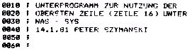

Nascom Journal |
2/81 |
Für viele Anwendungen ist die oberste Bildschirmzeile, die nicht „gescrollt“ werden kann, sehr nützlich. Manchmal jedoch, etwa beim Auflisten von BASIC-Programmen ist es wünschenswert, diese Zeile mitzubenutzen.
Das folgende kleine Unterprogramm ermöglicht es nun, die 16. Zeile wie jede normale „gescrollte“ Zeile zu verwenden. Unter NAS-SYS wird das voll verschiebbare Programm wie folgt aktiviert:
Für Verwendung mit dem Nasbug T4 muß im Unterprogramm vor dem RET-Befehl ein Aufruf von CRT (CD 3B 01) eingefügt und auf $CRT (0C4AH) ein Sprung (!) zum Unterprogramm eingetragen werden. Außerdem muß im Unterprogramm die Zeile 70 (und 270 entsprechend) in „CURPOS EQU &0C18“ geändert werden. Gleiches gilt für Nasbug T2 Dann ist im Unterprogramm in die Zeile 120 und 230 einzutragen: „CR EQU b1F“.
Das untenstehende Vergleichsprogramm paßt noch in das EPROM des Programmiergerätes (T4 und NAS-SYS Version).
Der Start der Vergleichsprogramme erfolgt mit dem Befehl: E B000 ARG2 ARG3 Dabei ist:
| ARG2 = | Startadresse Speicherblock 1 (z.B. Inhalt des EPROM) |
| ARG3 = | Startadresse Speicherblock 2 (z.B. Inhalt des zu prog. Speicherbereiches). |
Am Bildschirm erscheint bei Ungleichheit:
Adr.Block1 Inhalt1 Unterschied Inhalt2 Adr.Block2
Der Ausdruck auf dem Bildschirm wird durch Drücken einer beliebigen Taste gestoppt. Nach dem Drücken der SPACE-Taste wird der Ausdruck fortgesetzt. Mit Hilfe des U-Kommandos kann der Speichervergleich auch mitgedruckt werden.
1K-Speichervergleich fuer NAS-SYS
(Original-Bereich: B000 – B07F)
| Seite 5 von 20 |
|---|